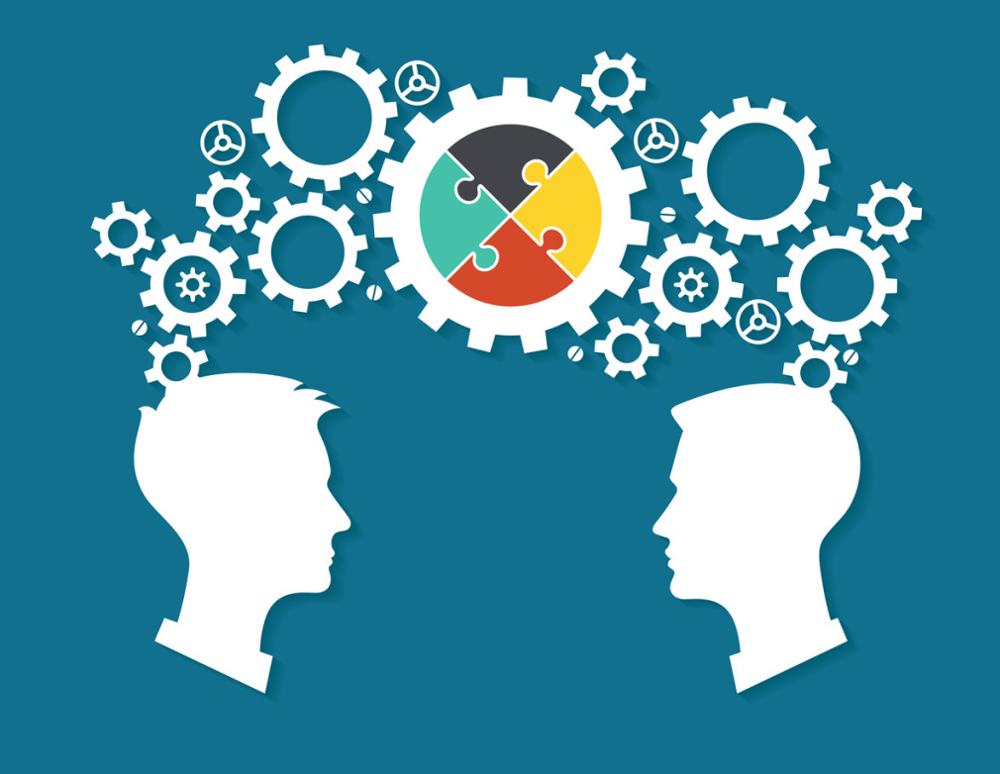

Gestão do Conhecimento |
|
|---|---|
Oque eu aprendi de Gestão do ConhecimentoGestão do conhecimento é a prática de organizar e compartilhar aquilo que aprendemos, para que não fique perdido e possa ser usado de forma útil no dia a dia. Seja em uma empresa, na escola, na faculdade ou até na vida pessoal. Ela está ligada à evolução entre dado, informação, conhecimento e sabedoria. Ou seja, a gestão do conhecimento ajuda a transformar dados e informações em algo realmente valioso, que pode ser usado para tomar melhores decisões, aprender mais rápido e melhorar resultados. |
|
|  | |